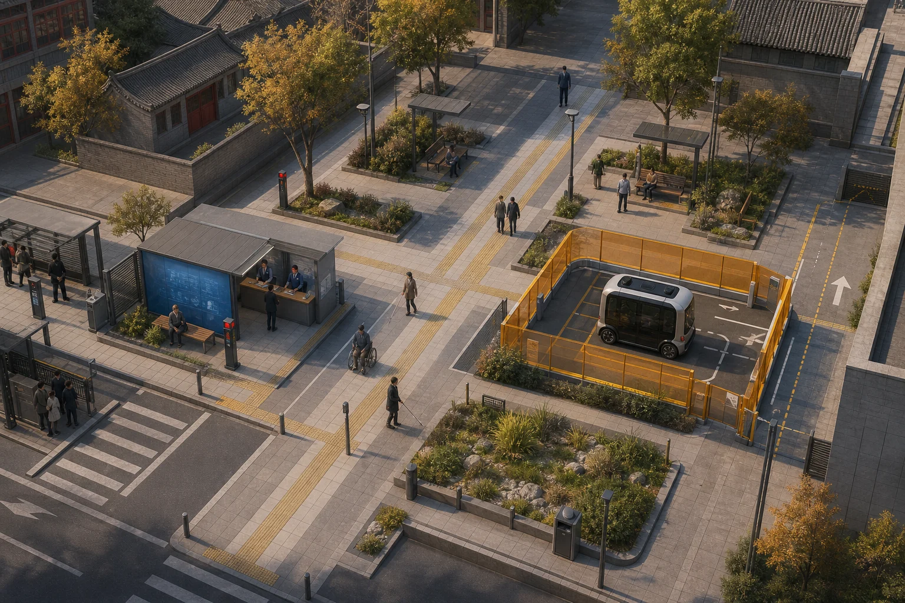

T1–T3
众智园·验真环
完整公共旁路包围受控验证内环；失败原因和停止状态面向公众。
JING-ZHANG TWO ANSWERS · SPATIAL DECISION TABLE
牺牲公共路径的方案先出局；入选方案才进入十二份同题测量契约。

同一场地 · 同一任务 · 同一规则
ALT-A切断公共十字；ALT-B保路但监督与撤场碎片化；ALT-C把试验集中在单侧，公共十字保持原长。
一脊三站两翼
T1–T3
完整公共旁路包围受控验证内环；失败原因和停止状态面向公众。
S1–S3
三条无账户路径穿过人工双语服务；插件关闭后静态服务仍成立。
S7–S9
公共十字不断线，AI只进入单侧可逆湾；决定留在公开门廊。
十二个同题场景
SCN-001
普通服务独立成立；AI层可选、可停、可退。
责任 · 测量 · 停止 · 恢复SCN-002
普通服务独立成立；AI层可选、可停、可退。
责任 · 测量 · 停止 · 恢复SCN-003
普通服务独立成立；AI层可选、可停、可退。
责任 · 测量 · 停止 · 恢复SCN-004
普通服务独立成立；AI层可选、可停、可退。
责任 · 测量 · 停止 · 恢复SCN-005
普通服务独立成立；AI层可选、可停、可退。
责任 · 测量 · 停止 · 恢复SCN-006
普通服务独立成立；AI层可选、可停、可退。
责任 · 测量 · 停止 · 恢复SCN-007
普通服务独立成立；AI层可选、可停、可退。
责任 · 测量 · 停止 · 恢复SCN-008
普通服务独立成立；AI层可选、可停、可退。
责任 · 测量 · 停止 · 恢复SCN-009
普通服务独立成立；AI层可选、可停、可退。
责任 · 测量 · 停止 · 恢复SCN-010
普通服务独立成立；AI层可选、可停、可退。
责任 · 测量 · 停止 · 恢复SCN-011
普通服务独立成立；AI层可选、可停、可退。
责任 · 测量 · 停止 · 恢复SCN-012
普通服务独立成立；AI层可选、可停、可退。
责任 · 测量 · 停止 · 恢复城市采纳回执｜空白模板
现场结果、许可、报价、客流、安全绩效、满意度和恢复时间仍为 unknown / not_field_run。
公开底图来源、设计几何、数量和输入哈希可复算。
只证明原型规则自洽，不证明现场交通、安全或公众接受度。
测绘、权属、站口、许可、报价和运营绩效须由专业阶段补齐。